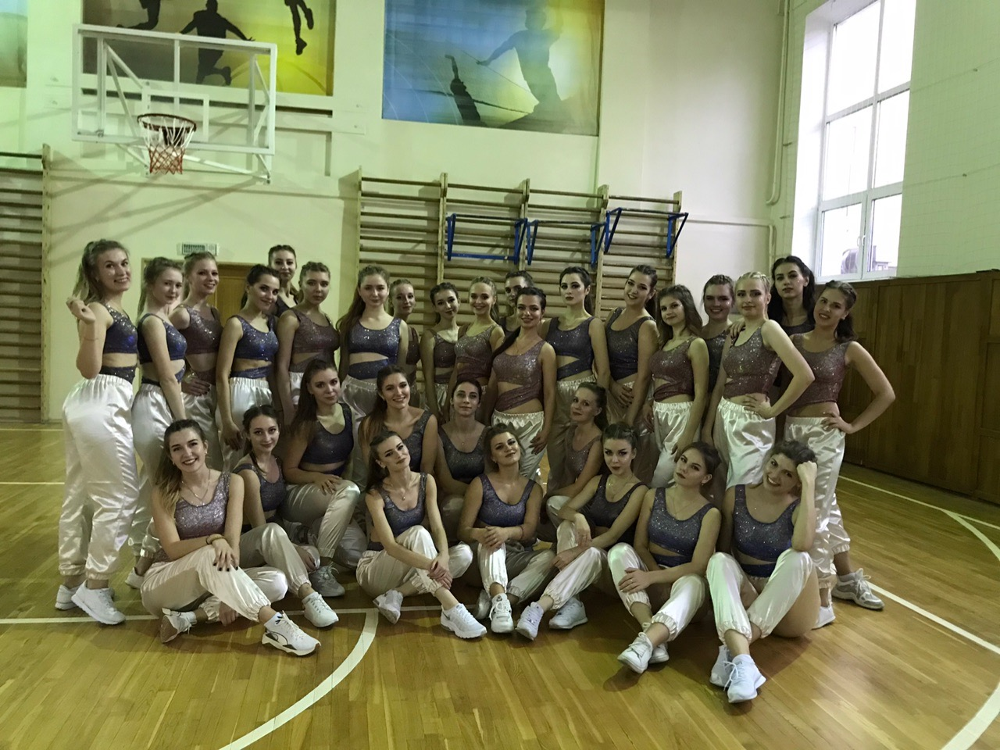
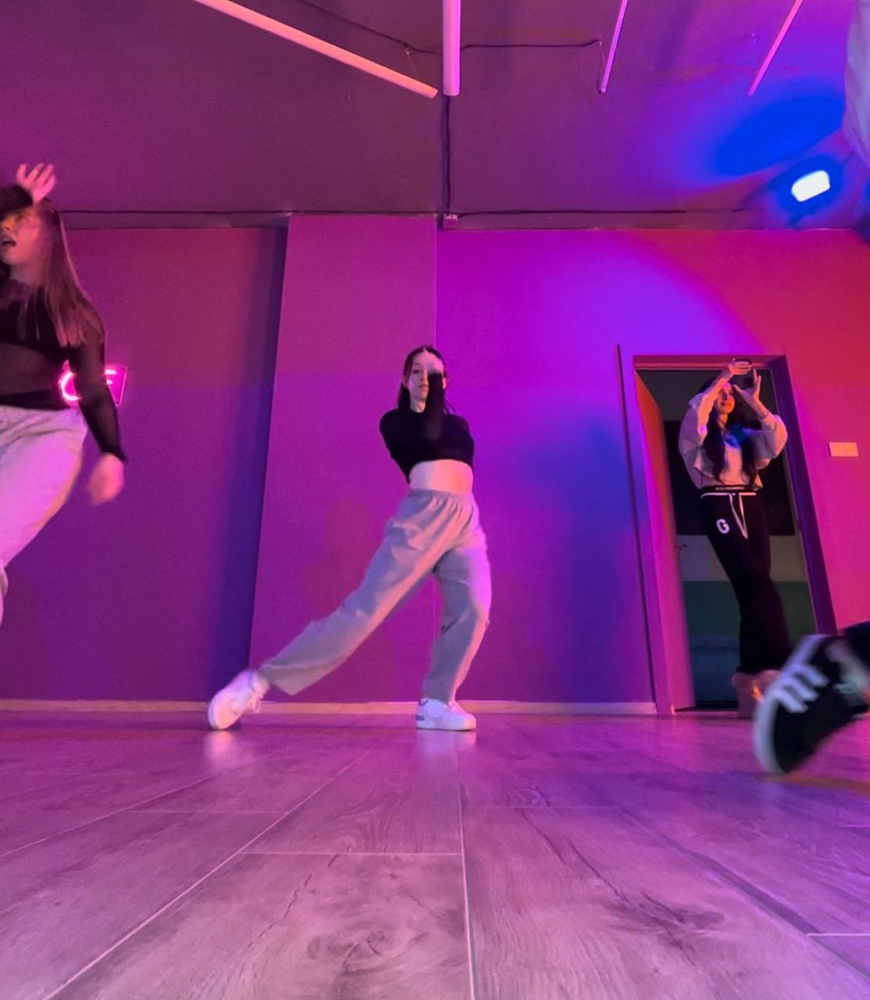
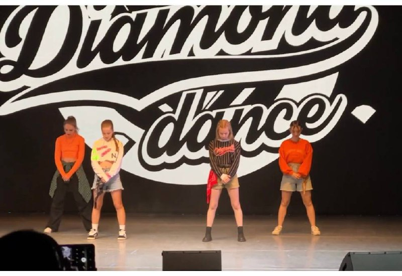
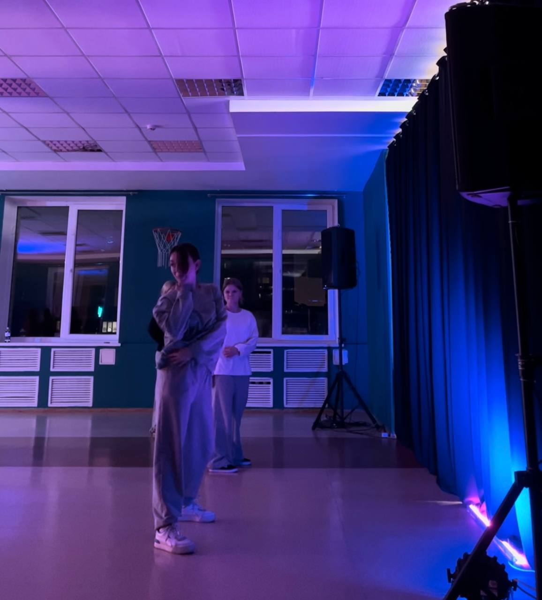

С самого детства хотела начать заниматься танцами, но долгое время не складывалось. Полноценно погрузиться в данную сферу получилось только на 4 курсе университета.
После окончания университета и возвращения домой, возникло желание найти студию танцев в городе, куда можно было бы ходить на постоянной основе. В итоге уже третий год являюсь постоянным учеником студии "DIAMOND DANCE"


